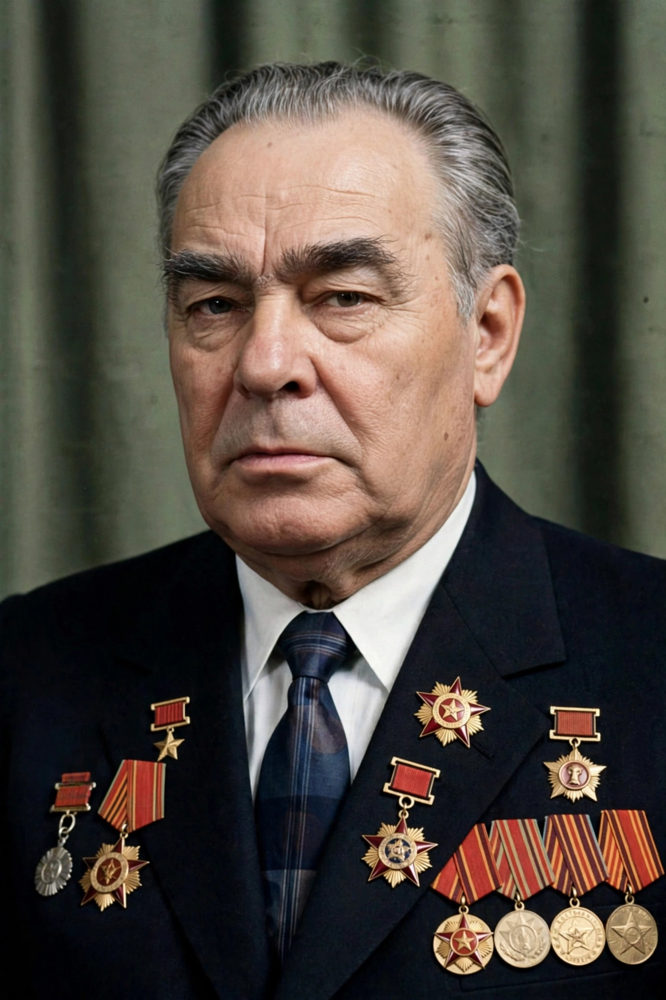

Leonid Ilyich Brezhnev (19 December 1906 – 10 November 1982) was a Soviet politician who led the Soviet Union from 1964 until his death in 1982 as General Secretary of the Communist Party and, from 1977, also as Chairman of the Presidium of the Supreme Soviet.

| Leonid Brezhnev | |
|---|---|
| General Secretary | 1964–1982 |
| Born | 19 December 1906, Kamenskoye, Russian Empire |
| Died | 10 November 1982, Moscow |
Brezhnev replaced Nikita Khrushchev in 1964, initially ruling collectively with Alexei Kosygin and Nikolai Podgorny. His era brought political stability but economic stagnation, an arms build-up achieving parity with the United States, détente in the 1970s, the Brezhnev Doctrine justifying intervention in Warsaw Pact states (used in Czechoslovakia in 1968), and the costly invasion of Afghanistan in 1979.
Later Soviet leaders labelled his later years the Era of Stagnation. See Cold War, Détente and Soviet–Afghan War.